In my previous post, I introduced xHCI98, a driver that gives Windows 98 SE, ME, 2000, XP, Vista and 7 working USB on machines whose only USB controller is eXtensible Host Controller Interface (xHCI), the only kind most modern machines have.
That version had a catch. It only drove the USB 2.0 side of the controller, so even a USB 3.0 flash drive was capped at around 34 MB/s.
After that, I decided to go further by giving this driver both USB 3.x and USB4/Thunderbolt support. The latter is so modern that not even all of today’s machines have it.
The project source code is still at the same link: https://github.com/yeokm1/xhci98
I decided to write this blog post to share my journey on how I managed to add this support in.
As with the previous post, most of the words in this blog post are written by me. AI was primarily used to generate the diagrams and tables.
Contents
- Part 1: USB 3
- Why xHCI98 1.x stopped at USB 2.0
- The cost of lying to usbport.sys
- Taking over usbport.sys functions
- Challenges along the way
- Intel’s USB 3 ports that start on the wrong controller
- Wrong IRQ on a Dell Latitude E7250
- Polling and MSI
- Invisible SuperSpeed devices on Intel Sunrise Point machines
- Tolerating controllers that misbehave
- VIA VL805 cards
- Controllers older than the xHCI 1.0 specification
- Pressing F8 at every boot on 64-bit Vista and 7
- USB 3.0 speed checks
- Part 2: USB4/Thunderbolt
- What USB4/Thunderbolt needs from the OS
- Why build an emulator first?
- Capturing my laptop’s Thunderbolt controller
- Relevant BIOS on my P14s Gen 1
- Framework Laptop 13 (12th gen)
- Checking the emulator against real operating systems
- Stor98: a hot-pluggable NVMe driver
- Hot-plugging the ASMedia enclosure on my P14s Gen 1
- Real testing on my Framework 13 (12th gen)
- Building with AI
- Conclusion
Part 1: USB 3
Why xHCI98 1.x stopped at USB 2.0
To recap, the initial release of xHCI98 was a miniport driver under Microsoft’s usbport.sys. This is the same architecture as Microsoft’s original UHCI, OHCI and EHCI drivers.
The problem is that usbport.sys is a USB 2.0-era design. It has no concept of what SuperSpeed is.
At that time, I wrote that doing USB 3 properly would mean replacing the entire HCD stack and that would incur additional effort, token cost and testing.
Besides, every USB 3 device by the standard should degrade gracefully to 480 Mbps USB 2.0 speeds. So I left it at that and asked the xHCI controller to power down all the USB 3.0 connections leaving only the USB 2.0 lines in the connector active.
The cost of lying to usbport.sys
What changed my mind was not speed. It was the growing list of workarounds I needed to accommodate usbport.sys’s limitations.
usbport.sys assumes an EHCI world. On EHCI, a USB 1.1 Full-Speed or Low-Speed device never sits directly on a USB 2.0 root port. It is always handed off to a separate companion controller UHCI/OHCI or goes through a hub’s Transaction Translator (TT).
xHCI has no such split as it handles all the standards by itself. A USB 1.1 device like a mouse on a root port made usbport.sys look for a TT. When that did not exist, the operating system hung.
The workaround I employed then was to report every root port device as High-Speed. This had some repercussions:
- Full-Speed and Low-Speed devices got the wrong interrupt polling intervals.
- Full-Speed USB audio played nothing on XP and above.
- Vista and 7 hung if a USB 1.1 hub was plugged into a root port.
In my final attempt to solve this problem, I had even added an experimental “virtual USB 2.0 hub” per root port. Basically every non-High-Speed device connected to a root port would have a virtual USB 2.0 hub sitting inline as a middleman just to give usbport.sys the TT it wanted to see.
This added plenty of edge cases like connection and disconnection which had to be carefully tested. It also had the side effect of using up one of the 5 hub tiers that USB allows.
I expected that in the long run this would get even more problematic as new bugs are reported in code I cannot control or when I want to add features that usbport.sys cannot support.
Taking over usbport.sys functions
I finally had enough. The cost of staying on the old architecture had grown to the point where it no longer justified its benefits. I should stop plugging into usbport.sys and take over its functions altogether. And I thought since I was doing this anyway, the original constraint of not doing USB 3.0 speeds was now gone.
xHCI98 2.x supports USB 3.0. Everything between the class drivers and the hardware is now my driver. Microsoft’s usbport.sys, usbhub.sys and the composite parent are no longer needed and the USB 3.x ports are no longer left unpowered.
The new xhci98.sys is a single bus driver that takes on several roles previously done by
usbport.sys: Port driverusbhub.sys/usbhub20.sys: Root and external hubsusbccgp.sys: Composite deviceusbd.sys: OS helper functions
The class drivers above it are still the same. I chose to stay compatible with the existing class drivers rather than reimplementing them as they are mature, have been used for decades and it keeps any third-party vendor driver working too.
There is also a second driver, xhciuas.sys, for USB Attached SCSI (UAS) storage. UAS is the faster storage protocol most USB 3 drives and SATA bridges support as opposed to the older Bulk-Only Transport that usbstor.sys uses. Although UAS drives are supposed to be able to fall back to Bulk-Only mode, I added UAS support in response to a user request as some UAS drives misbehave and don’t want to use Bulk mode.
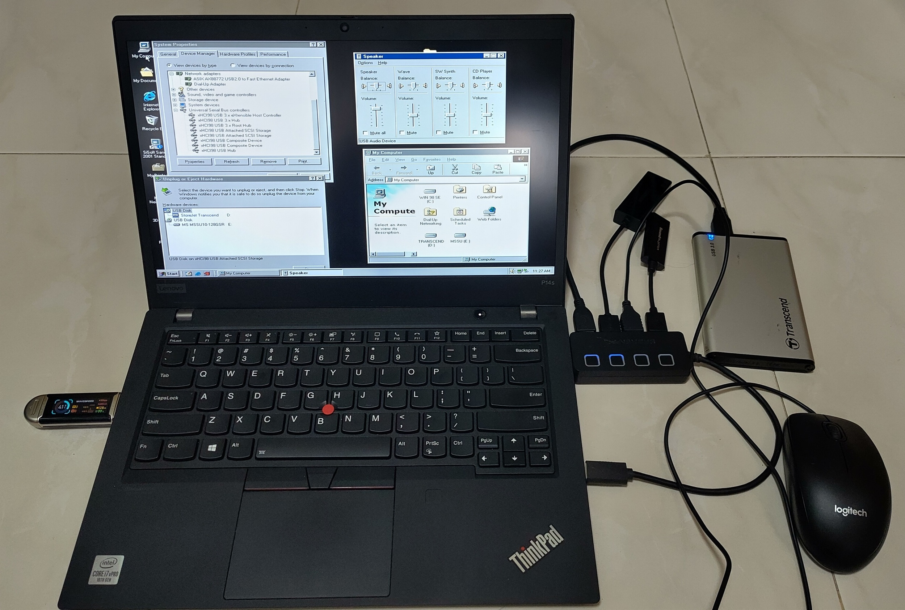
The P14s on Windows 98 SE with the USB 3 flash drive, plus a hub with a Transcend StoreJet drive, a USB sound card and an Ethernet adapter. Device Manager lists the xHCI98 controller, hubs, UAS storage and composite devices.
Some things I learned about this design:
- One x86 binary for everything from Windows 98 SE to Windows 7. Every single kernel function the driver imports had to be proven to exist on a stock Windows 98 SE. A missing export there is not a graceful error but a load failure. A separate x64 binary built with WDK 7.1 serves XP x64, Vista x64 and 7 x64.
- No USB 2.0 stack needed on Windows 98 SE anymore. NUSB is still useful for its storage drivers but its host stack half just sits idle under xHCI98.
- Device Manager still says “High Speed”. The
USB_DEVICE_SPEEDinterface those OSes read only has three values and predates SuperSpeed. The device is really running at SuperSpeed even though Windows cannot say so.
Challenges along the way
After I released the SuperSpeed version of the driver, user reports slowly came in as more people tried it on hardware I did not own.
Intel’s USB 3 ports that start on the wrong controller
On Intel 7, 8 and 9-series chipsets (Ivy Bridge to Broadwell), the blue USB 3 ports are wired to both the EHCI and xHCI controllers. With the BIOS on “Auto”, they start out on EHCI. So a USB 3 flash drive either runs at USB 2.0 speed or is invisible to xHCI98. This was done to ensure compatibility with OSes of that period, which did not all support xHCI, or did not support it during setup.
The driver can now flip those ports over to xHCI using the chipset registers when it starts and hand them back when it stops. A tester reminded me about this issue which I had initially missed.
The switch is done by writing to 2 registers in the xHCI controller’s PCI configuration space:
- USB3_PSSEN: Turns on the SuperSpeed lines of each port so USB 3 devices can connect at SuperSpeed.
- XUSB2PR: Moves each port’s USB 2.0 lines from the EHCI controller over to xHCI.
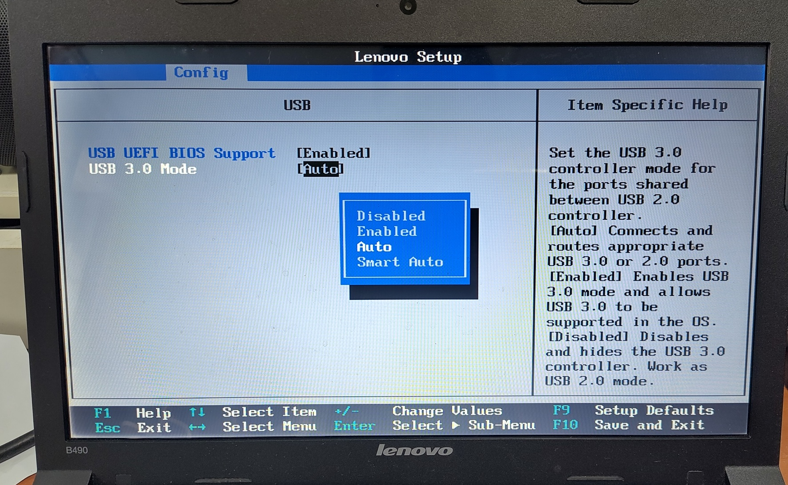
Lenovo B490’s BIOS with the “USB 3.0 Mode” option. On “Auto”, the shared ports start out on the EHCI controller unless commanded by the driver to switch. Other options can manually force a switch.
Wrong IRQ on a Dell Latitude E7250
On a 2015 Dell Latitude E7250 (Broadwell), after the driver was installed and the ports switched to USB 3.0 in the BIOS, the mouse was sluggish, disks never mounted and Windows would hang occasionally.
It turned out the BIOS programmed the chipset to send the xHCI interrupt to IRQ 16 while ACPI told Windows it was on IRQ 21. EHCI also used IRQ 21. Since IRQ 21 was only used by the EHCI controller, it had little activity once the USB ports were switched over from EHCI to xHCI. My interrupt handler only ever ran when EHCI happened to interrupt on the same line!
Nobody noticed this BIOS bug for years because Intel’s Windows 7 driver and Windows 8+ driver both use Message Signaled Interrupts (MSI) which do not use legacy interrupts at all.
With AI’s help and RW-Everything, the wrong-IRQ hypothesis was tested by rewriting the chipset routing register live to the correct IRQ value.
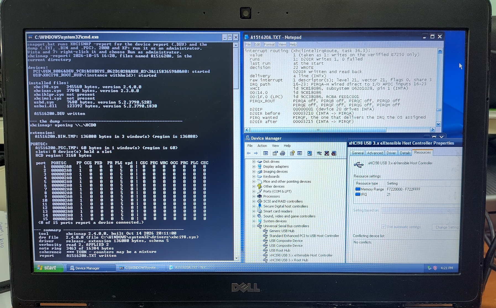
The E7250 on Windows XP. The XHCISNAP (my driver diagnostic and logging tool) report in Notepad.
It shows the driver rerouting the xHCI interrupt from PIRQA to PIRQF so it arrives on IRQ 21 where Windows expects it.
Polling and MSI
The E7250 taught me that I cannot always trust the legacy interrupt line. So the driver gained two alternatives.
- Polled event delivery. Instead of waiting for an interrupt, the driver checks the event ring on a timer. In automatic mode it switches to polling by itself if the interrupt is not available.
- MSI on Vista and 7. In my previous post I wrote that only Vista onwards supports MSI. For Vista and 7, my driver now uses MSI instead as this is the recommended method for PCIe devices.
Invisible SuperSpeed devices on Intel Sunrise Point machines
On 2 Intel Sunrise Point machines, my 2016 ThinkPad E460 and a community-tested 2018 HP EliteBook 850 G5, USB 3 flash drives were completely invisible. A USB 3 hub only showed as a USB 2.0 hub.
I took register snapshots using my XHCISNAP tool which showed the link was actually training fine at SuperSpeed.
The real cause was a speed table the controller publishes. On Sunrise Point, it only lists Intel’s internal SSIC chip-to-chip speeds (1248/2496/4992 Mb/s). My driver read that table as replacing the standard speed IDs rather than adding to them. So a normal SuperSpeed device was reported as “unknown speed” and dropped before it was even given a device slot.
I pointed the AI at the Linux source to see how it handled this. It turned out Linux never maps speeds through that table, which is why it never hit this issue. The fix was to let unlisted standard IDs fall back to their usual meanings.
Tolerating controllers that misbehave
A tester on an AMD AM5 board reported their mouse “randomly stops” and once a device was dead, the only way to recover was to replug the device.
My driver was stricter than Linux when a controller misbehaved. I referred to how Linux handles these and added seven tolerant behaviours, such as retrying transaction errors, recovering a halted endpoint, bringing back a port the controller disabled and recovering a halted controller.
From the Linux source code as well, I added quirk management for controllers from many vendors like Fresco Logic, ASMedia, AMD, TI, Etron, VIA and some Intel controllers.
VIA VL805 cards
I got a report that on a VIA VL805 PCIe card, every Low and Full-Speed device was silently ignored. There was no error and no yellow exclamation mark.
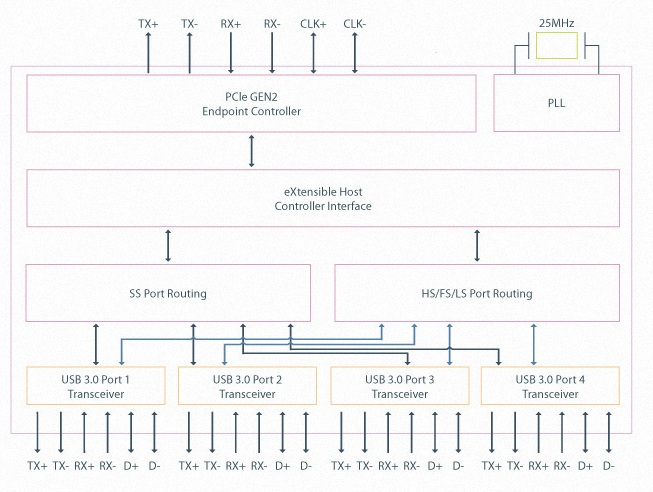
VL805 block diagram from VIA Labs.
The VL805 routes everything on the USB 2.0 side through an integrated hub, so its port speed table only lists High-Speed.
My driver wrongly used that table to judge the devices behind the hub too. I fixed it purely from logs provided by the reporter as I don’t own a VL805. The fix was later confirmed working.
Controllers older than the xHCI 1.0 specification
Every xHCI controller reports which revision of the specification it was built to. My driver was written against xHCI 1.0 onwards and refused anything below that as a safety mechanism. This will result in a Code 10 “This device cannot start” in Device Manager.
It turns out the very first generation of USB 3.0 controllers are xHCI 0.96 parts. These are the NEC/Renesas uPD720200 and ASMedia ASM1042 chips found on many early USB 3.0 PCIe add-in cards and 2010-era motherboards.
The xHCI specification was still a draft back then and Linux writes a few fields differently on these parts. The TD Size field counts in 1 KiB units rather than packets, some control and isochronous fields have to be written as 0, and one capability register does not exist so a resume from standby re-enumerates the devices.
I followed what Linux does and from 2.4.0.0 the driver accepts 0.96 controllers by default, with a registry switch to refuse them again.
Pressing F8 at every boot on 64-bit Vista and 7
64-bit Windows Vista and 7 refuse to load a kernel driver that is not signed and Microsoft no longer signs drivers for these legacy OSes. The only way to load the x64 driver was to press F8 and choose “Disable Driver Signature Enforcement” at every single boot which is a hassle and easy to miss.
The x64 drivers are now test-signed with the project’s own certificate. Users can now just boot their machines in test-signing mode and the driver loads on every boot without pressing F8. Windows will still warn that it cannot verify the publisher during installation, which is expected as this is not a Microsoft signature.
USB 3.0 speed checks
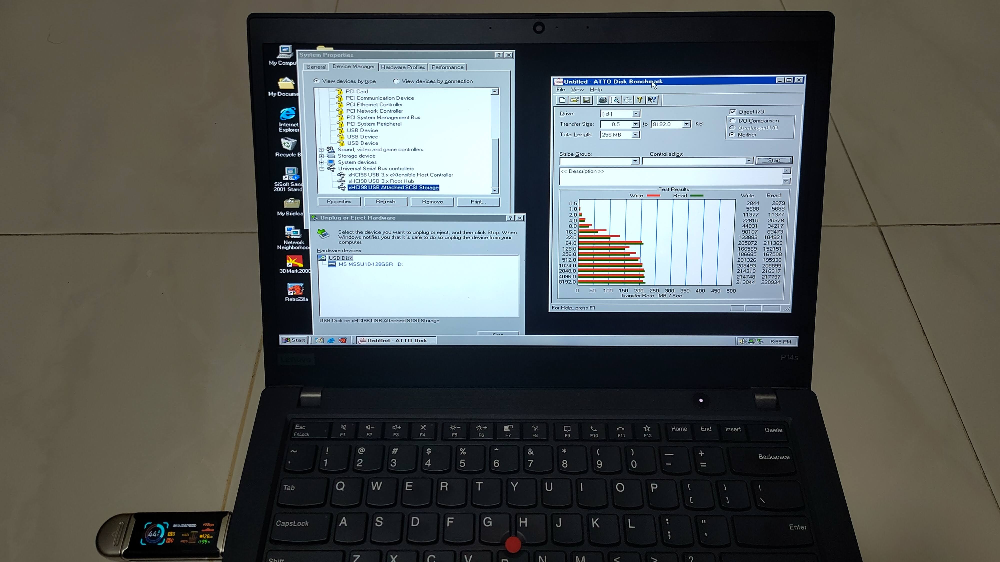
At the end of it, I did some benchmarking and the speed is approximately 200+ MB/s. A respectable figure for Windows 98.
The speed flatlines from 64 KB transfers onwards because of the 64 KB request size limit imposed by Windows’s USB storage driver.
Part 2: USB4/Thunderbolt
Now that USB 3 is done, what is the next step?
The newer USB4 and Thunderbolt standards of course!
What USB4/Thunderbolt needs from the OS
USB4 and Thunderbolt 3 are quite different from USB 3. A USB4 dock is not a USB device. It is closer to a network switch, a bunch of routers that carry other protocols inside tunnels. PCIe, USB 3 and DisplayPort each get their own tunnel.
There are three ways to get a USB4/Thunderbolt device working with an operating system.
- Pre-boot firmware tunnelling: No driver needed on Alpine Ridge machines with the BIOS option enabled but no hotplug.
- Software Connection Manager: The OS does all the work of enumerating routers, reading their ROMs, bonding the lanes and programming every hop of every path. This is what Windows 11 and Linux do on modern USB4 hosts.
- Firmware Connection Manager: Intel’s older Thunderbolt 3 controllers do all of that in their own firmware (Intel calls it the ICM).
Once a PCIe tunnel is up, a device inside the dock like an NVMe drive simply appears on the PCIe bus as if it were plugged into the motherboard. Windows can then use an existing PCI driver for it.
Since the first requires no driver effort, xHCI98 v3 covers options 2 and 3 with a new xhcicm.sys driver installed beside xhci98.sys. Like xhci98.sys, it runs on everything from Windows 98 SE to Windows 7, and it picks the right mode for each controller automatically:
- Thunderbolt 3 firmware CM client. It claims every Intel firmware CM controller that Linux supports based on the behaviour documented in the Linux source code.
- USB4 software CM for USB4 hosts verified against the emulator’s Alder Lake and ASM4242 host models. Besides the PCIe tunnel, it builds a USB3 tunnel so USB 3 devices in a dock reach the host’s own xHCI controller and
xhci98.sys. - Re-enumeration so Windows notices devices appearing and disappearing behind a tunnel without a manual Refresh in Device Manager.
- A link-state notification for my custom NVMe driver
Stor98. It notifiesStor98of changes in the tunnel link’s status. - Safe eject. So a tunnelled drive can be stopped before unplugging.
The PCIe devices behind the tunnel then use their own drivers. The xHCI controller inside a dock is driven by xhci98.sys itself, and an NVMe drive by Stor98.
This is the high-level architecture of how xHCI98 v3 works.
![xHCI98 v3 architecture: xhcicm.sys with a connection manager that is an ICM client on Thunderbolt 3 and a software connection manager on USB4, plus re-enumeration, safe eject, a controller-loss monitor, a query device and a status snapshot. It talks to the host controller's control ring, builds PCIe and USB3 tunnels through the cable to an NVMe enclosure or a Thunderbolt 3 dock, tells Windows Plug and Play or CONFIGMG to rescan bridges, feeds the XHCITR USB Tree and Safely Remove Hardware, and sends link-state notifications to the bundled Stor98 NVMe driver, a separate project](images/xhci98-tb3-usb4-architecture.svg)
Other than the driver, I also built a helper tool, xHCI98 USB Tree. It is modelled on Microsoft’s USB Device Viewer (usbview) to display useful information about the USB and Thunderbolt devices as well as to safely remove them.
Why build an emulator first?
With xHCI, QEMU already provided a qemu-xhci device model I could develop against for most of the project. There is no such thing for USB4 or Thunderbolt. The only other way to test would be on real hardware where every mistake means a crash and you have very little visibility into what went wrong or to easily revert state.
The other main reason is that I don’t actually have any USB4 hardware that can boot Windows 98. That requires UEFI-CSM support to boot a legacy BIOS OS. The only USB4 machines I know of that still have it are the relatively high-end AM5 motherboards based on the AMD X870 chipset or specialised motherboards with proprietary USB4 headers that can accept a USB4-PCIe add-in card.
I have a Framework Laptop 13 (12th gen) that officially supports USB4 but it is a UEFI Class 3 device with no CSM so it cannot boot Windows 98 at all. My P14s Gen 1 can boot Windows 98 but only has the older Thunderbolt 3. Both are still useful as references for the emulator as I’ll explain later.
So I started a separate project, usb4-emu, a fork of QEMU 11 that emulates USB4/Thunderbolt hosts and devices. The goal is for an operating system’s Connection Manager to work with emulated USB4/TB docks and bring up a PCIe tunnel to NVMe drives.
The emulator models these devices from public information such as specification documents and source code, as well as captured communication traces.
Captured traces:
- Intel Alpine Ridge Thunderbolt 3 from my ThinkPad P14s Gen 1
- Intel Alder Lake USB4 from my Framework Laptop 13 (12th gen)
- ORICO-AAGM2-U4 USB4 NVMe enclosure
- CalDigit TS3 Plus Thunderbolt 3 dock
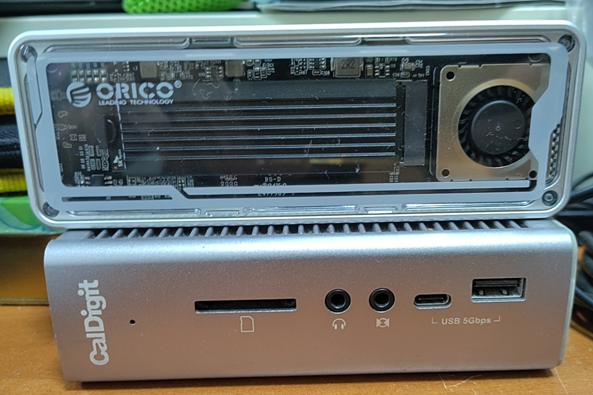
The ORICO-AAGM2-U4 USB4 NVMe enclosure and TB3 CalDigit TS3 Plus dock I used for my captures.
Public information and Linux source code:
- Intel Titan Ridge TB3
- ASMedia ASM4242 used by AM5 motherboards which have a modern CSM and USB4
- Generic Intel and AMD USB4 controller
Once the emulator was ready, it became much quicker for an AI agent to iterate on the code against it.
Capturing my laptop’s Thunderbolt controller
My P14s Gen 1 has an Intel Alpine Ridge LP (JHL6240) Thunderbolt 3 controller from 2016.
To capture the hardware states, I created capture tools for Linux, Windows 11 and DOS.
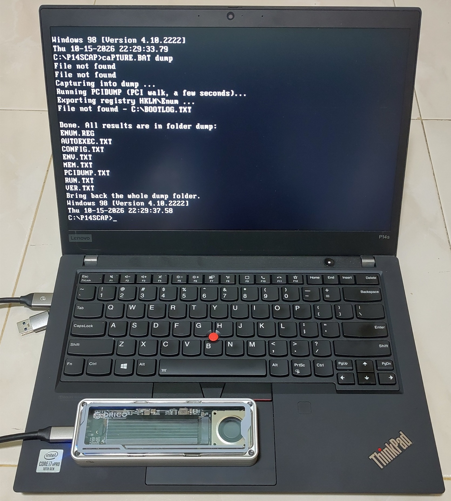
My capture script in Windows 98 DOS mode on the P14s with the ORICO USB4 enclosure attached.
Relevant BIOS on my P14s Gen 1
The P14s BIOS has two Thunderbolt options that affect a legacy OS:
- Thunderbolt BIOS Assist Mode: The firmware manages Thunderbolt hotplug and power on the OS’s behalf.
- Support in Pre Boot Environment: The firmware connects Thunderbolt devices before any OS starts.
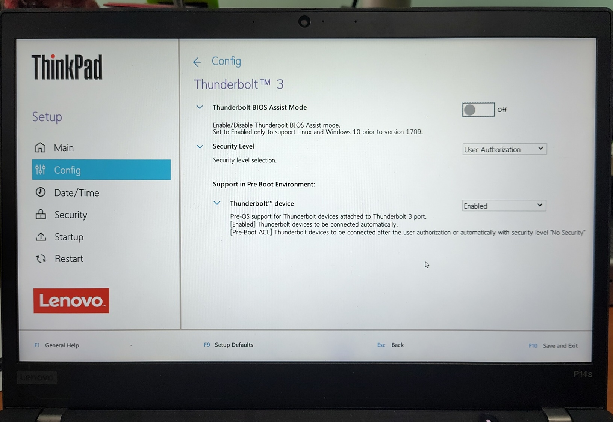
While I understood the theory, I was unsure how the behaviour towards the driver would differ between these 2 settings. I therefore tried all 4 combinations and captured the results of each.
I used two devices, the CalDigit TS3 Plus dock and an ORICO USB4 NVMe enclosure based on the ASMedia ASM2464 to record the dumps.
| Assist | Pre-boot | Thunderbolt 3 dock | USB4 NVMe enclosure |
|---|---|---|---|
| Off | Off | Needs a driver to approve it | USB disk unless a driver approves it |
| Off | On | Ready at boot | NVMe ready at boot |
| On | Off | Needs a driver, Thunderbolt USB controller hidden | Unusable |
| On | On | Ready at boot | NVMe ready at boot, single lane only |
These are some additional observations at least for this system:
- With Pre-boot on, no driver is needed. The BIOS sets up the PCIe link so Windows 98 just sees ordinary PCI devices. It even connected the USB4 enclosure which did not need approval.
- With Assist on, the controller can vanish. It is hidden if nothing is attached at boot and powers off shortly after the last device is unplugged. The OS is only told through ACPI hotplug which Windows 98 in APM mode (on a modern machine) doesn’t handle.
- An unapproved USB4 device can fall back to USB 3. The enclosure drops its PCIe link after a few seconds and reconnects as a USB 3 Attached SCSI disk.
- The BIOS routes IRQs for the Thunderbolt ports.
The best setting for Windows 98 is therefore “Assist off and Pre-boot on” with the security level left at User Authorization.
The Thunderbolt controller and its USB controller are then always present and never pulled out from under Windows 98 and anything attached at boot just works.
Hot-plugging after boot still needs a driver to approve the device and rescan the bus as Windows 98 gets no notification from the platform.
I then passed the recorded traces to AI plus available Linux public source code to generate a QEMU model for me to reproduce all 4 combinations with a dock attached to match what I captured.
Framework Laptop 13 (12th gen)
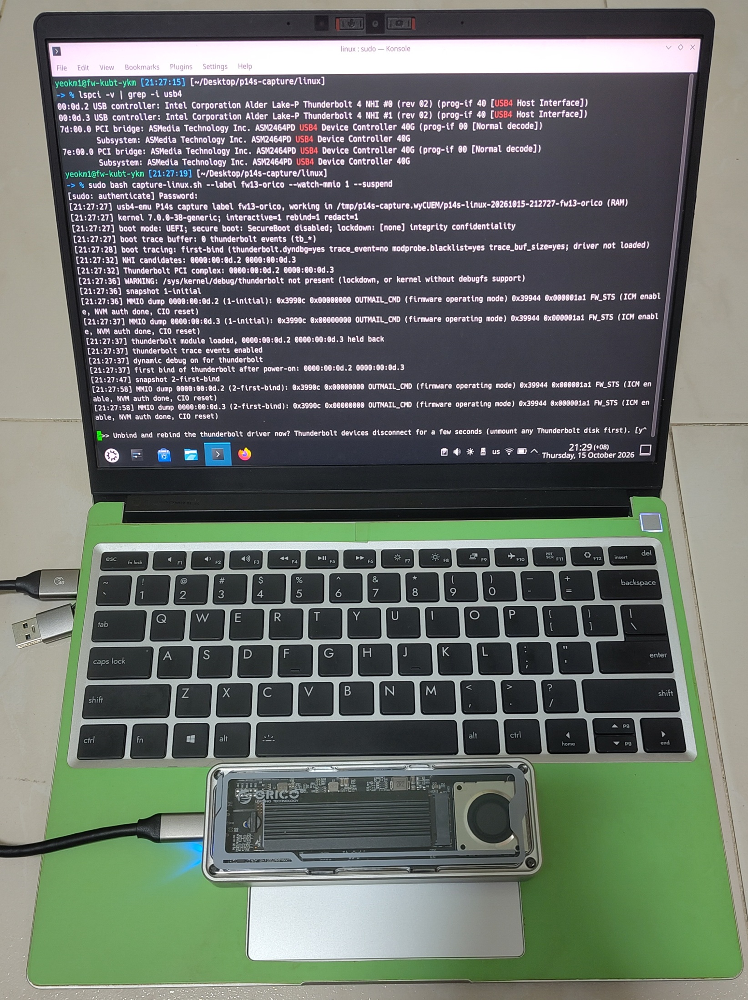
While my Framework Laptop 13 (12th gen) cannot boot Windows 98 as it has no CSM, it has a real Intel Alder Lake USB4 host.
It ran the Linux capture script with the ORICO USB4 enclosure attached to sniff actual USB4 communication. Primary captures were done on Linux as the kernel allows tracing of the Thunderbolt logs which provided useful information.
I also captured communication between it and my TB3-based CalDigit dock to get a sense of how a USB4 controller reacts to a TB3 device, as TB3 compatibility is an optional part of the USB4 standard.
I captured Linux’s software CM talking to it and replayed its traffic against the emulator.
Checking the emulator against real operating systems
An emulator is only useful if it behaves like the real thing. I checked it against operating systems that already have USB4 support before trying Windows 98.
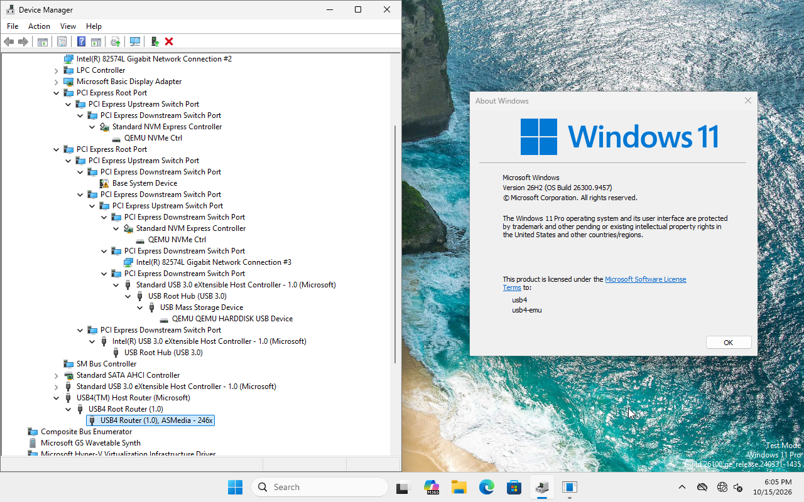
Device Manager of my QEMU-emulated Windows 11 showing the USB4 Host Router recognised together with the emulated ASMedia ASM2464 enclosure.
The fact that Windows 11 and Linux recognise and work with these controllers and devices using their native drivers at least shows that the emulated models are reasonably accurate representations of the real thing.
With the emulator ready, I could finally put Windows 98 in it.
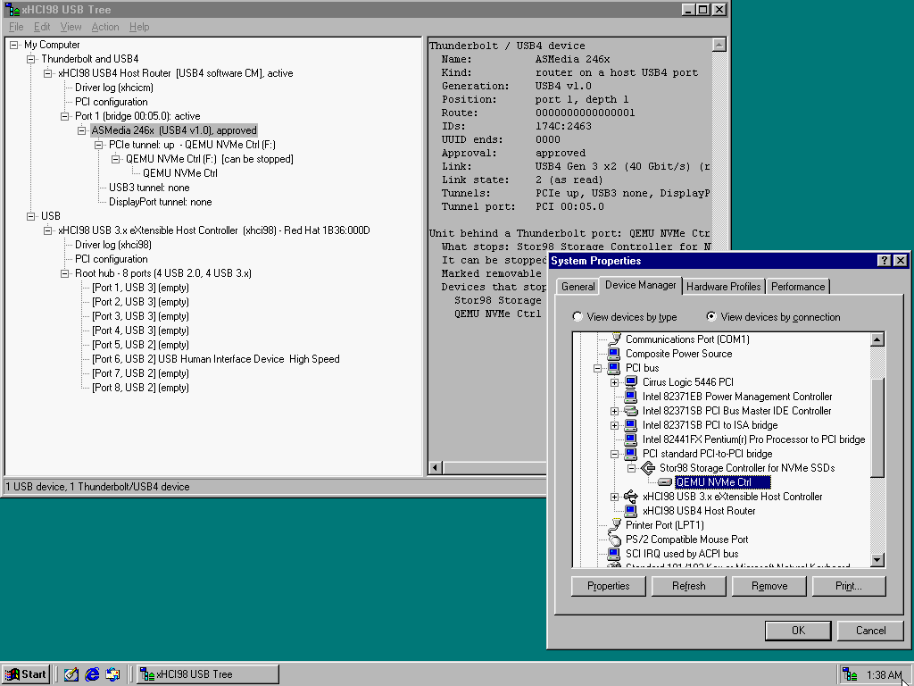
Emulated Windows 98 SE’s Device Manager with the USB4 software connection manager. The xHCI98 USB Tree shows the emulated ASMedia enclosure on a 40 Gbit/s USB4 link with its PCIe tunnel up.
Stor98: a hot-pluggable NVMe driver
Conventional NVMe drivers assume the drive is soldered or slotted onto the motherboard and stays permanently connected while the system is powered.
So I made a separate driver, Stor98, a fork of SweetLow’s nvme9x which itself is a port of Dominik Behr’s nvme2k. It keeps their solid well-tested code and adds what a hot-pluggable drive needs: a link-state notification from xhcicm.sys so it can stop cleanly when the tunnel goes down.
Stor98 has its own repository as it is under the BSD-3-Clause licence inherited from nvme2k and nvme9x. It is bundled in the xHCI98 download for user convenience.
The name avoids “NVMe” as the NVM Express working group restricts the use of its name.
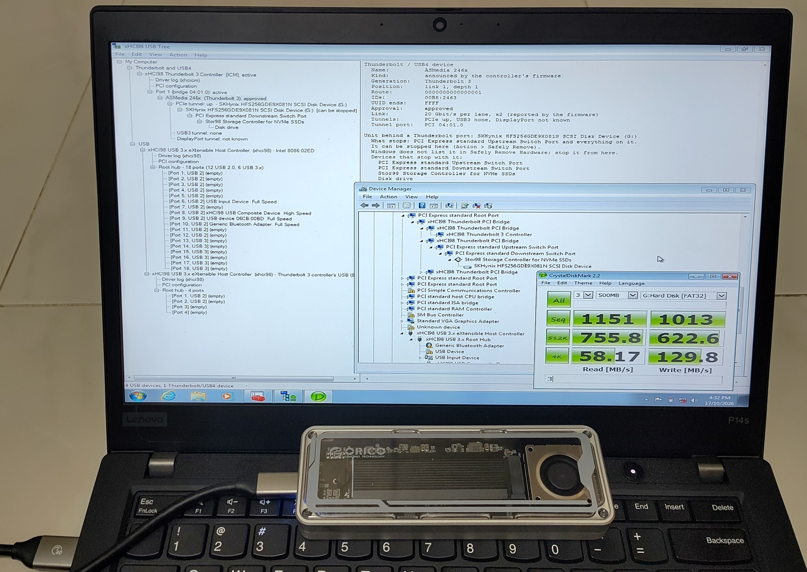
CrystalDiskMark sequential on 1151 MB/s read and 1013 MB/s write on Windows 7 with an ORICO USB4 NVMe enclosure on its Thunderbolt 3 port.
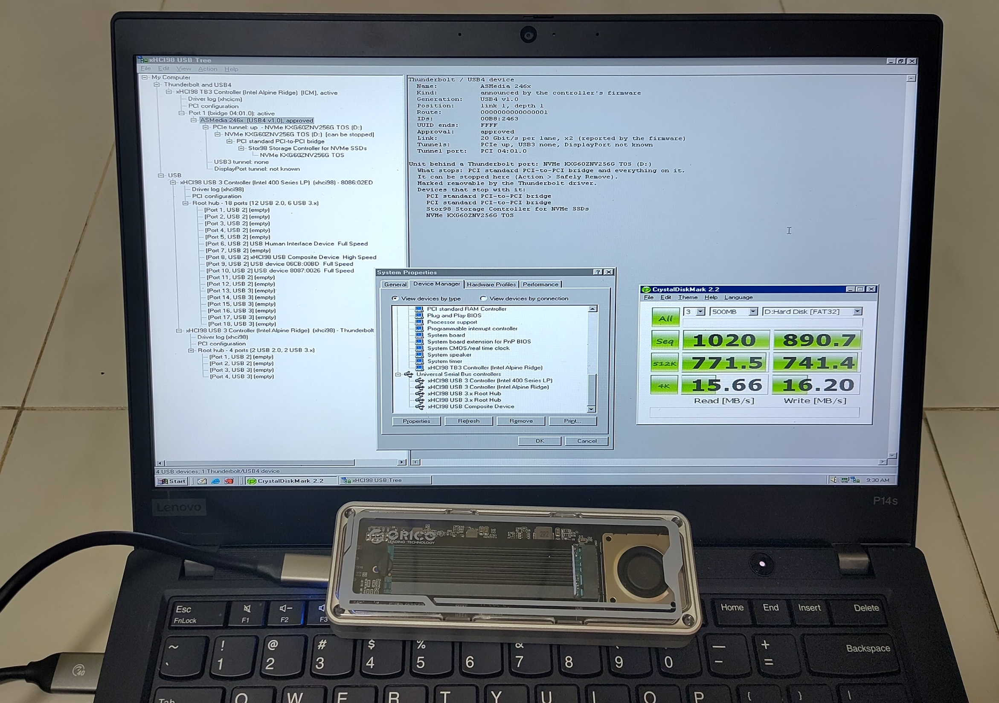
The same enclosure on Windows 98 SE with the same drivers: CrystalDiskMark sequential about 210 MB/s read and 256 MB/s write. Windows 98’s own storage stack, not the Thunderbolt link, is the bottleneck here.
Hot-plugging the ASMedia enclosure on my P14s Gen 1
With the BIOS on “Assist off and Pre-boot on”, the ORICO USB4 enclosure (ASMedia ASM2464) worked on my P14s under Windows 98 SE if it was attached at power-on and Windows assigned a drive letter to it.
The problem was hot-plugging. After unplugging and plugging it back in, Device Manager showed a Code 29 on the enclosure’s PCIe bridge and the drive never came back. The same happened if the enclosure was plugged in after Windows had started without it.
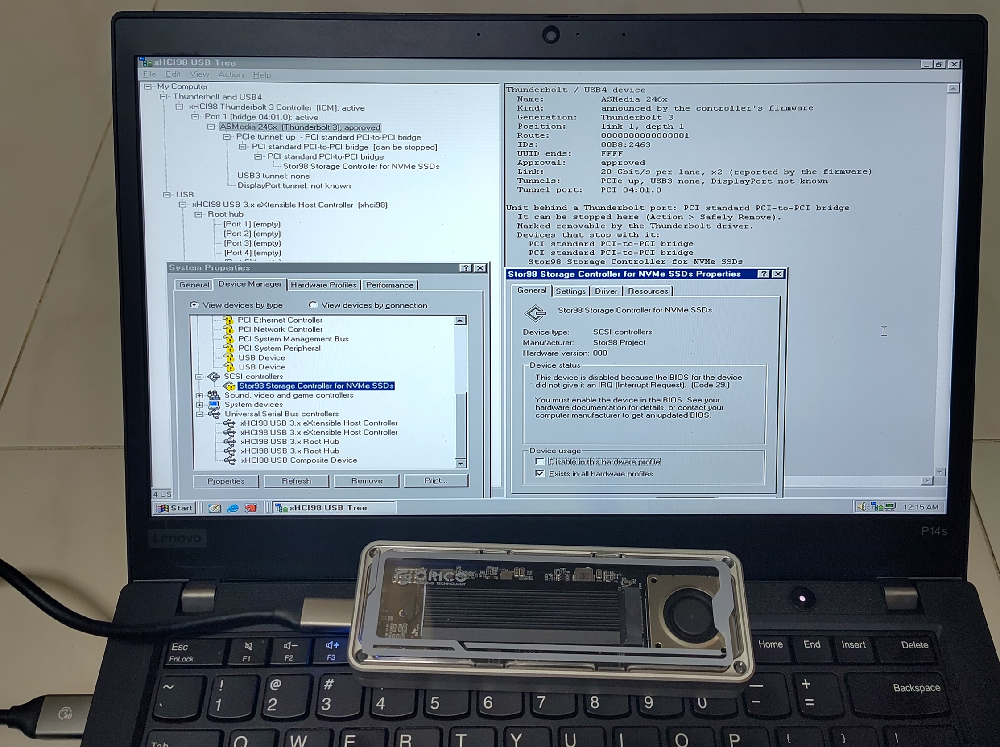
xHCI98 USB Tree shows the Thunderbolt side is healthy. ASMedia enclosure is approved with a 20 Gbit/s x2 link and the PCIe tunnel is up. Device Manager however shows Stor98 at Code 29 as it has no IRQ.
Logs from the driver confirmed the Thunderbolt side was fine every time. The firmware approved the device and the PCIe tunnel came up. The failure was purely on the PCI side.
At power-on, the BIOS sets up the enclosure’s PCI resources: bus numbers, memory windows and interrupt routing.
Windows 98’s PCI driver does not configure a newly added PCI bridge. Windows 2000 and XP did not have this problem.
So xhcicm.sys has to do the BIOS’s job after a hot-plug: assign the bus numbers, memory windows and the interrupt line. Each device below the port is given the port’s own IRQ.
With that, the drive came back with its letter, both after a hot-plug and after a re-plug following Safely Remove.
Real testing on my Framework 13 (12th gen)
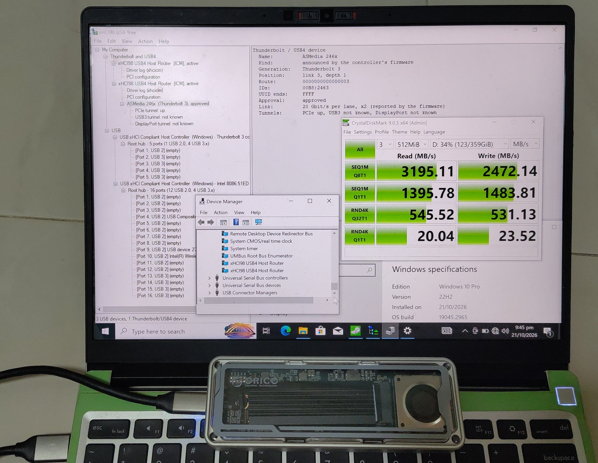
Windows 10 Pro 22H2 x64 on my Framework Laptop 13 whose Intel Alder Lake controller is a real USB4 host.
Windows 10 has no USB4 support of its own so both of its USB4 host routers show up in Device Manager as “xHCI98 USB4 Host Router” given by my driver.
The firmware runs its own connection manager here so xhcicm.sys acts as its client and approves the ORICO enclosure which the xHCI98 USB Tree shows on a 40 Gbit/s USB4 link (20 Gbit/s per lane, x2) with its PCIe tunnel up.
The “Thunderbolt 3” generation it shows is a display bug in this build, the link really is USB4.
CrystalDiskMark 9 gets about 3195 MB/s sequential read and 2472 MB/s write on the NVMe drive.
Building with AI
As with my previous projects, this was built with heavy AI assistance:
- Claude Fable 5.1 for planning
- Claude Opus 5.5 for coding
- Codex GPT 6 Astra as an adversarial reviewer
The workflow from the previous post of using documentation as the AI’s memory scaled up a lot:
- The roadmap has reached 42 phases at this point.
- There are 25 design records governing the major features.
- 15 write-ups of issues found, how they were diagnosed and what the solution was.
While AI really helped a lot in the technical coding portion, one place it could not move the needle much was the physical troubleshooting and interaction with other test reporters.
Some issues are simply difficult to resolve purely from publicly-available technical specifications or source code and thus required my personal attention.
Conclusion
When I wrote the previous post, I thought USB 2.0 speeds on Windows 98 were good enough and a full USB 3 stack was not worth the effort. Instead, I brought the driver up to USB 3.0, then USB4 and Thunderbolt. These standards were far ahead of what the Microsoft engineers for Windows 98 could have envisioned.
Thanks to the following:
- SweetLow for his USB and NVMe drivers for Windows 9x and plenty of bug reports and feedback
- Omores for testing and showcasing my project
- Dominik Behr for nvme2k
- The ReactOS project and the Linux xHCI and Thunderbolt drivers which were my behavioural references
- Everyone who reported issues to me
On real hardware, the driver has run on two machines, Thunderbolt 3 on my P14s Gen 1 under Windows 98 SE and 7 and USB4 on my Framework Laptop 13 under Windows 10 x64.
I have not tried Windows 98 to 7 on an actual USB4 host as I don’t own one with CSM. The USB4 software connection manager which AMD and ASMedia hosts need, has only been tested against the emulator.
Nevertheless, I think I have done the best I can given the constraints I’m under short of buying a high-end AMD AM5 system to put Win 98SE on it.
If you have a machine with a Thunderbolt or USB4 port and are willing to run Windows 98 or a legacy OS, especially one of those AM5 X870 or specialised USB4 motherboards, I would love to hear how it goes!